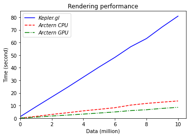

如何渲染时空数据¶
时空数据渲染就是使用图形化的方式展示数据的整体面貌。
例如，在手机导航软件中，路段的颜色会根据其拥堵状况而变化。在普通拥堵路况下，路段被标记为黄色；在严重拥堵路况下，路段被标记为红色。这样你就可以根据路段的颜色快速地了解某块地理区域内的整体道路拥堵状态，而不用陷入特定数据的特定细节。
目前，Arctern 包含 OGC 标准中常用的 API，涵盖几何对象的构造、访问、关系分析，以及度量。因此，任何接受 OGC 标准格式输入的第三方 Web 渲染工具都可以为 Arctern 所用，比如 Kepler.gl。
根据 Kepler.gl 用户手册，Kepler.gl 接收 OGC 标准的 WKT 数据作为输入。因此，使用 Arctern 的 GeoSeries.to_wkt 方法将时空数据从 Arctern 的内部数据格式转换成 WKT 格式之后，你即可调用 Kepler.gl 实现数据渲染。
除了调用传统的 Web 渲染工具实现图形化展示，Arctern 本身提供服务器端的渲染。Arctern 支持渲染大规模数据的轮廓图、热力图、散点图、图标图、渔网图等。另外 Arctern 的服务器端渲染支持 GPU 加速。
Arctern 和 Kepler.gl 的渲染能力对比¶
在不同数据量下，Arctern （CPU 版本和 GPU 版本）和 Kepler.gl 的渲染时间如下：
| 数据量 | 10 | 1e6 | 2e6 | 3e6 | 4e6 | 5e6 | 6e6 | 7e6 | 8e6 | 9e6 | 10e6 |
|---|---|---|---|---|---|---|---|---|---|---|---|
| Kepler.gl | 1.23 | 9.11 | 16.82 | 24.53 | 32.56 | 40.58 | 48.22 | 56.62 | 63.13 | 72.36 | 80.92 |
| Arctern CPU | 0.05 | 1.45 | 2.98 | 4.32 | 5.81 | 7.02 | 8.31 | 10.36 | 11.71 | 12.72 | 13.65 |
| Arctern GPU | 0.05 | 0.81 | 1.71 | 2.45 | 3.24 | 4.08 | 4.94 | 6.00 | 6.69 | 7.77 | 8.59 |
注意： 上表数据的时间单位：秒
根据上表数据，绘制折线图如下：

Arctern CPU 的渲染速度平均比 Kepler.gl 快 5.72 倍。
Arctern GPU 的渲染速度平均比 Kepler.gl 快 9.84 倍。